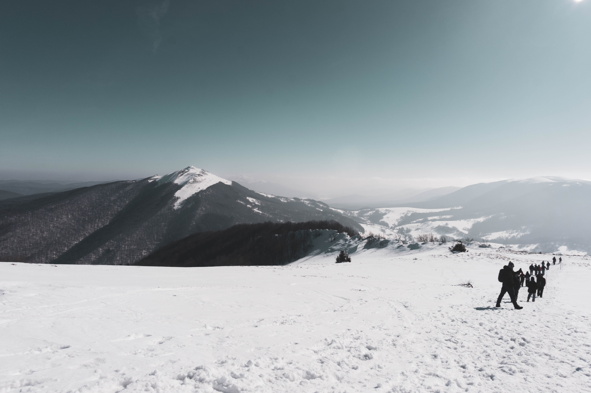
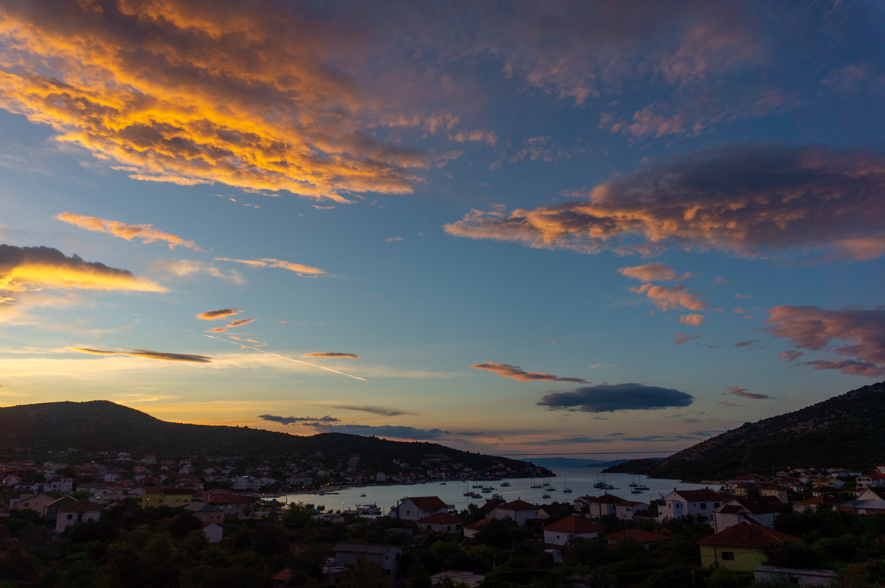
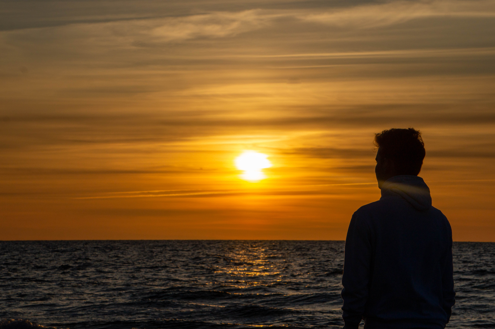
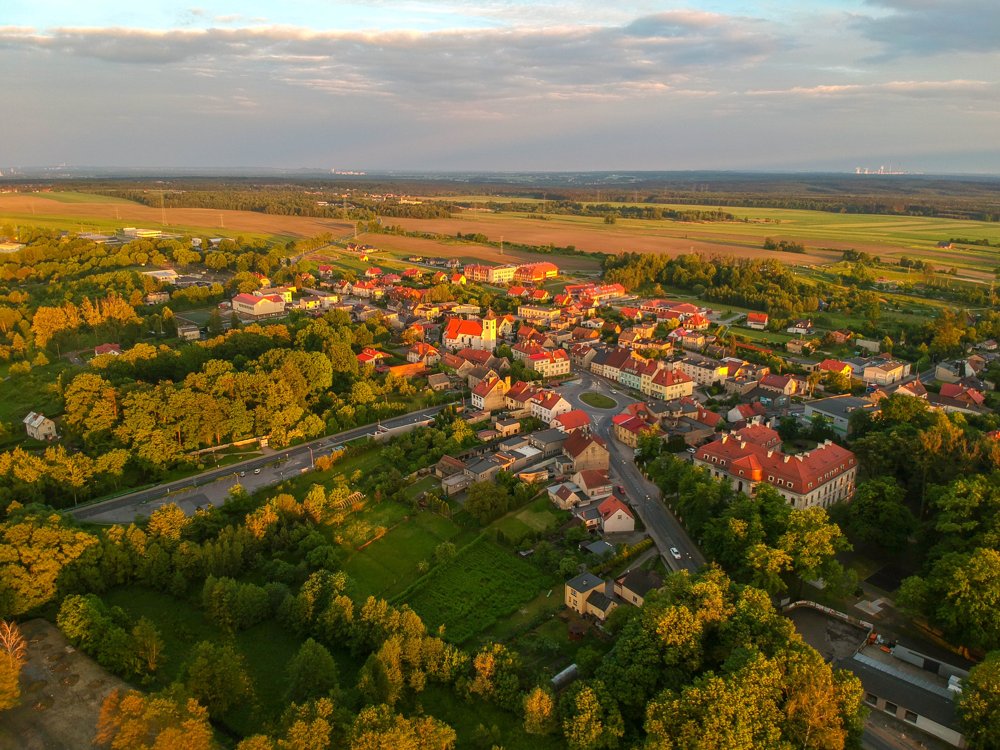
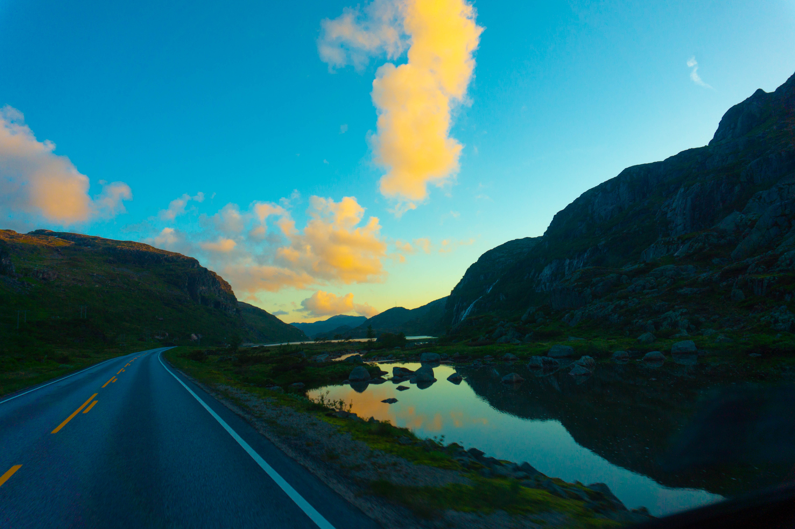
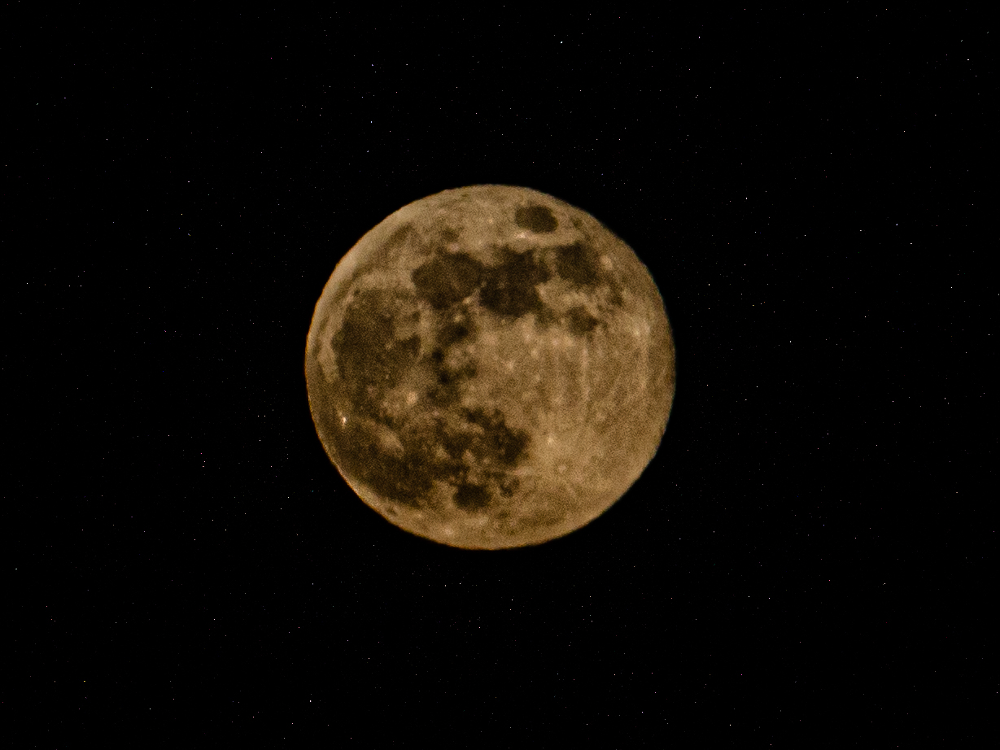
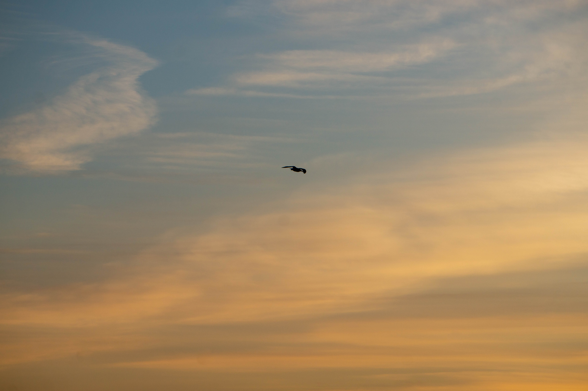
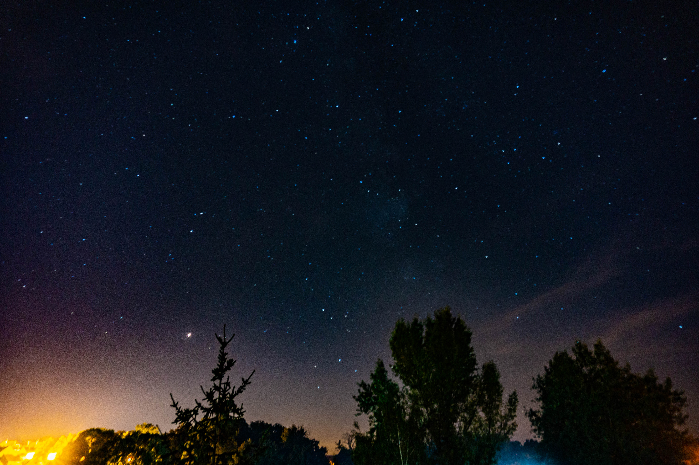

Portfolio

Góry w Bieszczadach, luty 2019

Wschód nad Chorwacją, sierpień 2020

Zachód nad Międzywodziem, maj 2020

Golden Hour nad Sośnicowicami, maj 2020

Droga w Norwegii, czerwiec 2019

Pełnia księżyca w okolicach jeziora Dzierżno, maj 2020

Mewa na tle nieba na Międzywodziem, maj 2020

Poranna rosa w Hiszpanii, lipiec 2018

Niebo nad Sośnicowicami pełne gwiazd, sierpień 2018